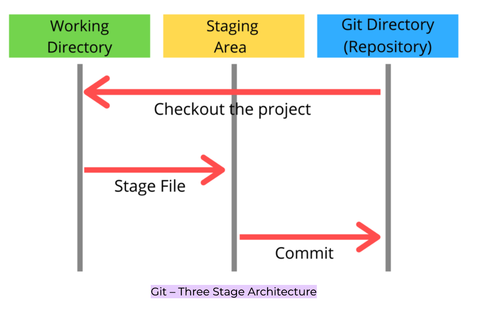

Git Arch

Working directory - current files that are stored, it's also called as untracked files
Staging area - files that you wish to commit(to create snapshot of the files).
Git directory - after commit is fired, files which are in staging area will move to git repository.
Checkout
you would use the commit id and move your HEAD to that particular commit and then you would branch from there.
git commit <commit_id>
git checkout -b <new_branch>
Incase you don't need to branch out, this method is not suitable
second way,
git log --oneline
git checkout <commit-id> -- filename.txt
git status
git log --oneline
git commit -m 'new commit id'
branching
fast-forward
Developers create a feature branch, work on it, and when it's ready to be integrated into the main development branch, they perform a fast-forward merge if the conditions are met. This keeps the commit history clean and straightforward.
Default merging startergy would be ff
git branch -b feature/feature1
git checkout main
git merge feature/feature1
diff
git diff command is used to display the differences between two sets of changes, such as comparing files between branches.
# differences between the master branch and a feature
git diff master..feat1
#differences for file1.txt and file2.js between the master and feat1 branch
git diff master..feat1 file1.txt file2.js
#Difference for a Single File
git diff master:app.js feat1:app.js
#Differences for Staged Changes
git diff --staged
stash & unstash
Let's assume you created file and commited in the main branch. Now, lets say you would checout a new branch and modify the files without committing. Once you switch back to main branch you would get the changes made in another branch to main which is not recommended. The solution would be to stash changes to the branch before switching.
git stash list
git stash / git stash save
Once you are back to your branch(or any branch you would want to apply changes on), you can unstash and start working from where you left off.
pop it would apply changes to the current branch you are in, and removes from the stash. apply applies the changes to the current directory and would not remove from the stash.
# removes from the stash
git stash pop
or
# would not remove, but can be applied later to any branch.
git stash apply
you can clear or drop stashes
git stash drop stash@{1}
git stash clear
detached HEAD
When we commit any file in the branch, the HEAD always points to the branch. when we checkout and workon, we still have our HEAD being pointed at the branch we work upon.
When we checkout a particular commit, HEAD points at that commit rather than the branch, then we call it as a detached HEAD
git log --oneline
git commit <commit-id>
git status
It would be very essential sometimes that you need to take up a particular commit and then work upon. In that case, you can checkout particular commit, where youe HEAD would point to the branch you took from.
git checkout <commit-id>
<modify your files>
git add .
git commit -m 'your new commits'
git status
You can select the previous commit using HEAD
git checkout HEAD~1
git checkout HEAD~2
git switch - # it would take you back where you were there
discard changes
you have made changes to the file, but don't want to keep those. You can revert back the file to whatever it looked like when you last committed, reverting back to HEAD
1. git checkout HEAD file1.txt
2. git checkout -- file1.txt file2.txt
3. git restore file1.txt file2.txt
Let's say you have commited the secrets file(i.e staged area), and now you want to restore it.
git status
git restore --staged secrets.txt
git status
git reset
soft
let's say you have made a couple of bad commits on the master branch, but you actually made them on a seperate branch instead, then you use git reset <commitid>. here, in this case you would actually lose the commit id's but your changes in the file remains the same. Hence you would need to take a new branch and commit those files. Once commited then come back to master/main branch. you won't see those commits as well as the changes made to that file.
simple words, won't effect working directory or staging area, only commitid would be changed.
git log --oneline
git reset commitid
git log --oneline - bad commits to the file not seen, head is relaed to your commitid
git status - it says modified, but your changes still exists
git checkout -b do_your_commits
git add .
git commit 'removed changed made to files from the branch'
git checkout master
git status
hard
If you want your changes and your commitid to be reverted from working directory and stage then you would be performing the hard reset.
git log --oneline
git status
git reset --hard commitid - all your changes are lost along with commitid
git status
Note: Make sure always that you need to be careful in hard reset as you would lose changes made in working directory.
git revert
Creates a new commit which reverses/undo the changes from a commit.
git add .
git commit -m 'bad commits'
git log --oneline
git revert commitid - this will prompt an editor for changes and on saving you would "revert bad commit", changes to the file are lost
git status
git log --oneline - your revert entry will be added so that collaborators would know that you have reverted changes on the code.
git origin/main
remote tracking branch
At the time you last committed with this remote repo.
let's say you have cloned the repo, when you search for the branches you would see there are remote/origin which is nothing but the pointer for the remote repo of main branch. when you add files and commit, then you would get message like your origin/main is ahead by 1 commit.
origin/master - references the state of the master branch on the remote repo named origi
remote branch -r
git add newfile.txt
git commit 'your remote branch ahead'
In case, you wanted to know what exactly your changes were in the remote repo, then you would switch to origin/master. It would message as your HEAD has been detached, no need to panic. incase you want to make some more new changes, then take out a new branch from it and then work on.
git switch -c origin/master
<detached head>....
git checkout -b <new_branch> - incase you need a new branch
git switch -c master
git fetch and pull
git fetch
- Allows changes from the remote repository to the local repository.
- Updates the remote-tracking branches with new changes
- Does not merge changes onto your current HEAD branch
- Safe to do anytime.
git pull
- Allows changes from the remote repository to local repository to working directory.
- Updates the current branch with new changes, mergung them
- Can result in merge conflicts
- Not recommended if you have un-committed chanegs
git pull = git fetch + git merge
merge PR with conflicts
Switch to the branch in question. Merge in master/main and resolve conflicts
git fetch
git switch my-new-feature
git merge master
fix conflicts
Switch to master, marge the feature branch(with no conflicts now), push changes to github.
git switch master
get merge my-new-feature
git push origin master
Now, your PR would be without conflicts
- what is rebase and explain
- Explain about the branchinig startergy
clone and fork
Cloning is about creating a local copy for working on a project, while forking is about creating a separate copy, often used in the context of open-source collaboration, with the potential to contribute changes back to the original project. The choice between cloning and forking depends on your specific needs and the collaborative context of the project you're working on.
Let's say you forked, which creates a copy from the original in your account, but when the changes happens to the original repo, your changes would be out of sync. Hence you would need to configure to allow remote repo to get changes incase the original repo changes.
git remote -v
git remote add upstream main # Configure to the original repo for incoming changes.
git remote -v
git pull upstream main
git status
rebase
- It can be used as an alternative to merge
- It can be used as a clean up tool for your commits.
Let's say when you are working on the feature branch, there are few of the bug fixes and they would have commited to master branch. So now you need to merge the chages from main branch to your feature branch, resulting in a merge commit.
When the above keeps happening for a quite long time, your branch would have all the merge commits from main and your commits description on the feature would not be so much visible. Hence in this case, we would use rebase all the feature branch commits would be available at the tip of master branch, so no merge commits
Merge (creates extra commit)
main: A---B---C
\
feature: D---E
After merge:
main: A---B---C--------M
\ /
feature: D---E------
Rebase (rewrites history)
main: A---B---C
\
feature: D---E
After rebase:
main: A---B---C
\
feature: D'---E'
When, you have a conflict in the master branch, you would fix the conflict and add the files to the branch.
git switch feat
git merge master
<RESOLVE AUTO CONFLICTS>
git commit -am 'fixed merge conflicts'
git status
git commits
In above section we told that we could use rebase as a clean up tool, here we will learn more about this. i.e rewrite, delete, rename, or even re-order commits(before sharing to others)
git log --oneline
git rebase -i HEAD~6
# after modifying file, save and quit, you would be opened by another edit, save a new commit msg.
git status
git log --oneline
Some of them you must try out..
# p, pick <commit> = use commit
# r, reword <commit> = use commit, but edit the commit message
# e, edit <commit> = use commit, but stop for amending
# s, squash <commit> = use commit, but meld into previous commit
# f, fixup <commit> = like "squash", but discard this commit's log message
# x, exec <command> = run command (the rest of the line) using shell
# b, break = stop here (continue rebase later with 'git rebase --continue')
# d, drop <commit> = remove commit
# l, label <label> = label current HEAD with a name
# t, reset <label> = reset HEAD to a label
# m, merge [-C <commit> | -c <commit>] <label> [# <oneline>]
# . create a merge commit using the original merge commit's
# . message (or the oneline, if no original merge commit was
# . specified). Use -c <commit> to reword the commit message.
tag
Two types of tagging
- lightweight tag: they are just a name/label that points to a prticular commit
- annotated tags: store extra info including the authors anme, email, date, tag msg.. etc
git tag
git tag -l "*beta*"
git tag -l "v17*"
git diff v17.0.0..v17.0.1
lightweight
git commit -am 'added patch version'
git tag v18.0.1
git commit -am 'added readme.md'
git tag v10.0.2
git diff v18.0.1..v10.0.2
annotated
git tag -a v18.0.3 # it would open an editor to provide msg.
you can also use tag from taking previous commit id
git tag <tagname> <commitid>
git tag <tagname> <commitid> -f # force tag for commit incase it already exists
git tag -d <tagname>
Note: when you update the remote repo using tags, it won't push all the tags. instead you need to explicitly tell to push it
git push origin <tagname>
git push origin --tags # push all the tags
behind the git
when you do git init you would be getting an .git directory and it holds all the version files for the repo. we would look few of the main files that helps in understanding the git better.
ls .git/
COMMIT_EDITMSG config hooks info objects refs
HEAD description index logs packed-refs
➜ react git:(main) ls .git/refs
heads remotes tags
➜ react git:(main) ls .git/refs/heads
main
➜ react git:(main) ls .git/refs/remotes
origin
➜ react git:(main) ls .git/refs/remotes/origin
HEAD
➜ react git:(main) ls .git/objects
0e 19 41 52 54 6e 8f a8 dc info pack
refs - Contains one file per branch in a repository. Each file is named after a branch and contains the hash of the commit at the tip of the branch(last commit).
HEAD - text file that keeps track of where HEAD points. during the DETACHED HEAD it contains a hash instead of branch.
objects - contains all the repo files. This is where git stores the backups of files, commits in a repo etc The files are all compressed and encrypted..
There are 4 types of objects
- commit
- tree
- blob
- annotated tag
When ever we write commits, its SHA-1 that encrypts and stores in a database that has key-value pairs. you need anything to hash out and check, you can use the below.
Encrypt
echo 'hello' | git hash-object --stdin
echo 'hello' | git hash-object --stdin -w
ce013625030ba8dba906f756967f9e9ca394464a
ls .git/objects # your hash object stored in this directory, which is encrypted.
Decrypt
➜ git:(main) git cat-file -p ce013625030ba8dba906f756967f9e9ca394464a
hello
git blobs
git uses to store the contents of files in a given repository.Blobs don't even include the filenames of each file or any other data. It looks like a commit hash, but its only blob hash.
trees
Tress are git objects used to store the contents of a directory. each tree contains pointers that can refer to blobs and to other trees. each entry in a tree contains SHA-1 hash of a blob or tree, as well as the mode,type, and filename
git cat-file -p main^{tree}
040000 tree e4cacd8e23c9de749e53b4d06e5cf76fd10bf22d .circleci
040000 tree d0b0e04eb6108e5cd4c4a2c87a7c68f80772bbb1 .codesandbox
100644 blob 07552cfff88bafaf4d207e6255394bc6d6215302 .editorconfig
100644 blob 7d79ef692311259a6986aaa9160b1f6e7e795180 .eslintignore
100644 blob 9d88915811935871123b2b450e972de4251ae109 .eslintrc.js
100644 blob 176a458f94e0ea5272ce67c36bf30b6be9caf623 .gitattributes
040000 tree 855f8e70e7e3e1bc69f0f4771e4591dceee09e54 .github
100644 blob 6ec345e172e5e034cf68ef9c4a9c34fd8043da95 .gitignore
100644 blob e661c3707d5de330ad0b939af9623f894a0bc0d8 .mailmap
100644 blob e329619ca22426dece9974cfc626442201c19afa .nvmrc
100644 blob 6f69f7f891d672bc7b6696c3c33aaa760956e715 .prettierignore
100644 blob 4f7ef193130c9019539a08bfb5738ba7af968c83 .prettierrc.js
100644 blob 0967ef424bce6791893e9a57bb952f80fd536e93 .watchmanconfig
100644 blob 146796383fbeaa19371045f4559d8d32817bf939 AUTHORS
100644 blob 6040a0b246cb3402a626d3624f1ae6fe939adbbb CHANGELOG-canary.md
100644 blob 8f6df415e32a3706fe120094a22f8253fcd900fa CHANGELOG.md
100644 blob 08b500a221857ec3f451338e80b4a9ab1173a1af CODE_OF_CONDUCT.md
100644 blob 589af800fdc36dd1658ea6e96ad88a60572ca523 CONTRIBUTING.md
100644 blob b93be90515ccd0b9daedaa589e42bf5929693f1f LICENSE
100644 blob a8d33198d23c47de66eca1caccdeeea7d9e78661 README.md
100644 blob ef97ee7e3afc3716226dfb5d33a34e951c142690 ReactVersions.js
100644 blob 655dfeaec0e67a9c448bf08a5f32d1f73aaa9611 SECURITY.md
100644 blob d4d1e3213c574c85ed774d85c73567c06d534129 babel.config.js
100644 blob e29426afda7a956b0cebbc24f374cc2b3276044b dangerfile.js
040000 tree 16d7de144f85053e52b5df9c2fa2741113e03e0e fixtures
100644 blob 76443cdd50285039de8c4e1ff755722c402bc03c netlify.toml
100644 blob d45f2f57c4b5bfa9507f134f6eea6adf88782464 package.json
040000 tree 11c2952c7a7bd2fb611231701ba90a7766e1c09d packages
040000 tree a4a83cf4096449c73f4d552f4e8c9bbf15be22ad scripts
100644 blob 30b017680e30f3699c43aec49bfcf31e6f1a4dab yarn.lock
commits
Commit objects combine a tree object along with information about the context that led to the current tree. commits store a reference to parent commit, authors, the committer and commit msg.
reflogs
Git keeps a record of when the tips of branches and other references were updated in the repo. you can view and update these ref logs using the git reflog. It would be helpful incase you have messed up commits or while you rebase you need to know what changes in the past you made etc .. you can always use reflogs to go that commit and work on.
Note: reflogs keep track only local activity. they are not shared with collaborators. older entries are removed after 90 days.
git reflog show HEAD
git reflog
differences between log and reflog is that, log gives the commits history where as reflog provides the switch between the different branches along with all commit ids.
alias
you can find the config file in ~/.git/.gitconfig, you can define your alias as below
vim ~/.git/.gitconfig
[alias]
l = log
st = status
Now, you can use
git l
git st
you can also use the CLI utility that helps you to achive the same(below)..
git config --global alias.l log
git config --global alias.st status
git alias references
Git Oneliners
git reset HEAD -- path/to/file -> rm file from staged repo
git commit --amend -m 'created new files' --no-edit -> modify recent commit
git reset --hard HEAD~1 -> revert previous commit
References
https://www.bogotobogo.com/cplusplus/Git/Git_GitHub_Express.php
https://www.codementor.io/@alexershov/11-painful-git-interview-questions-and-answers-you-will-cry-on-lybbrqhvs`